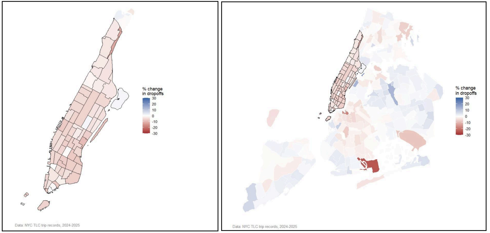

Effect of Congestion Pricing Policy on For-Hire Vehicles' Mobility in New York City
This work evaluates the effects of New York City's congestion pricing policy on for-hire vehicle mobility patterns using over 573 million trip records from the NYC Taxi and Limousine Commission. It employs a difference-in-differences approach to estimate how congestion pricing changes trip demand, travel behavior, and spatial mobility.